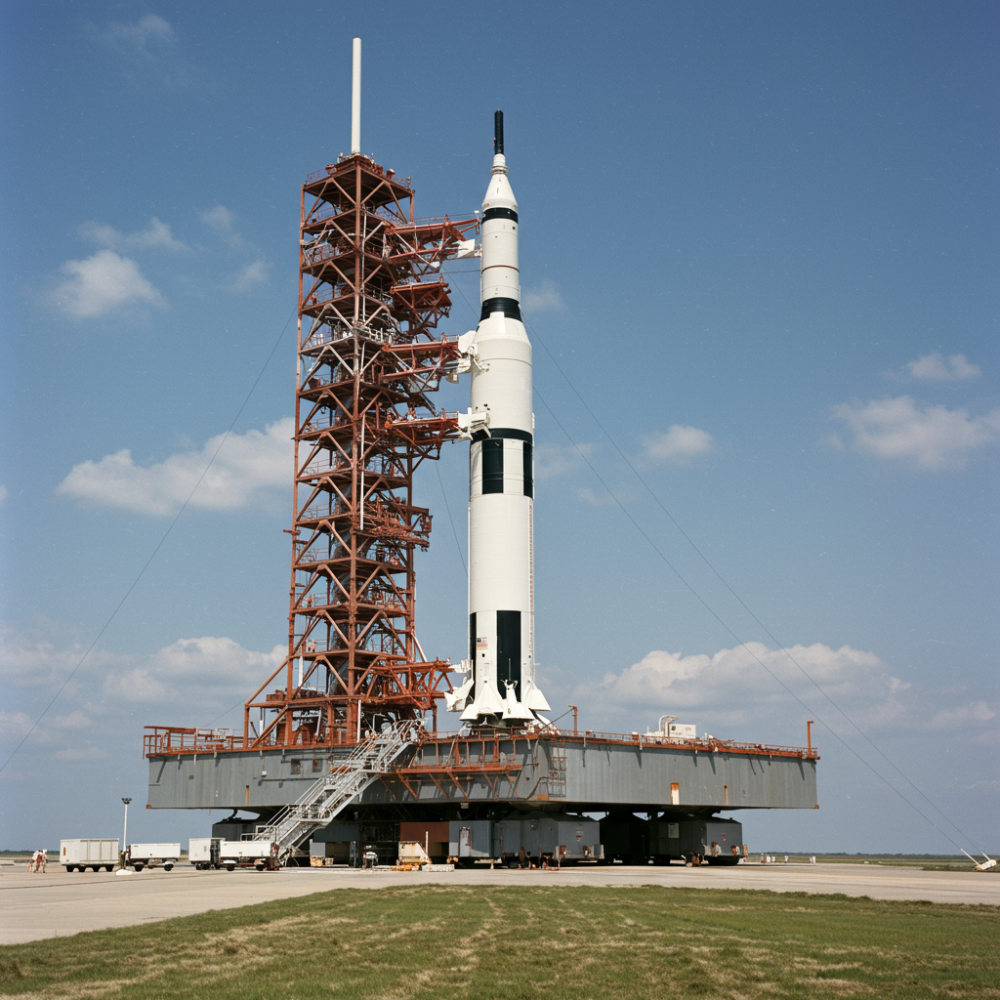

Apolo 1
Agencia: NASA
Fecha prevista de lanzamiento: 21 de febrero de 1967
Tipo de misión: Prueba en tierra (tripulada)
Objetivo: Ensayo de lanzamiento y chequeo del sistema de control ambiental, comunicaciones y protocolos de seguridad en tierra.
Carga científica: N/A (fase de pruebas pre-misión)
Accidente
El 27 de enero de 1967, durante una prueba en tierra dentro del módulo de comando en la plataforma LC-34, un incendio devastador consumió la cápsula en segundos. Los astronautas Virgil "Gus" Grissom, Edward White y Roger Chaffee perdieron la vida.
Impacto histórico
Apolo 1 marcó un punto de inflexión en el programa espacial estadounidense. El desastre llevó a una revisión completa de los sistemas eléctricos, materiales inflamables y protocolos de seguridad de la NASA. A pesar de no haber volado, su legado fue vital para el éxito de las misiones posteriores del Programa Apolo.